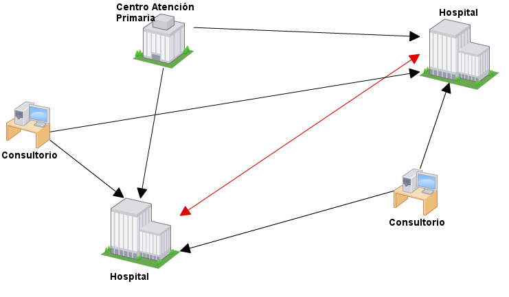
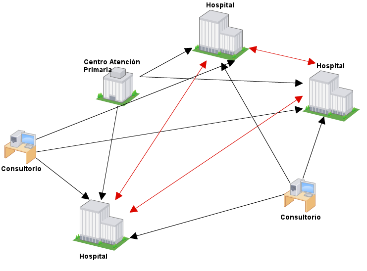
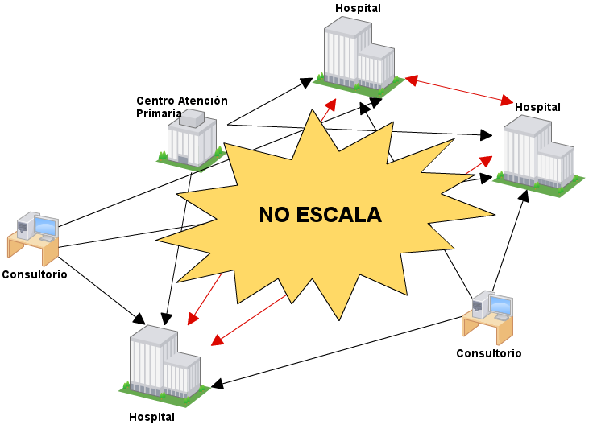
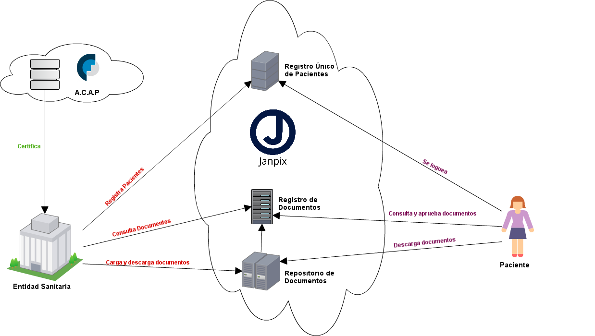
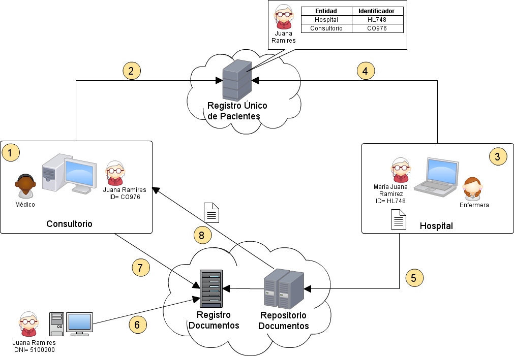
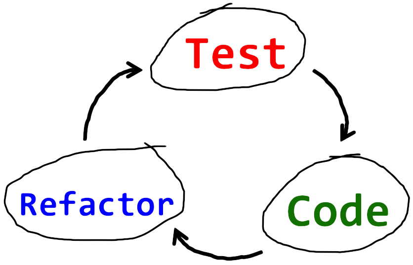

Universidad de Buenos Aires
Facultad de Ingeniería
JANPIX
Historia Clínica Electrónica Centralizada
Indice
- Situación actual
- Propuestas actuales
- Janpix
- Idea
- Protocolo base
- Arquitectura
- Seguridad
- Demostración
- Tecnologías utilizadas
- Beneficios
- Mejoras
- Lecciones aprendidas
- Preguntas
- Fin
Situación Actual
La información no es compartida entre hospitales
Cada hospital implementa su protocolo

A medida que sumamos mas hospitales ...

Se vuelve inmantenible

Propuestas actuales
- Los hospitales importantes implementan soluciones de forma interna.
- Algunos diagnósticos se entregan vía web.
- Soluciones aisladas.
- Registro Nacional de pacientes.
Etimología y propuesta
- JANPIX no quiere decir "Java Architecture Network for Patients In uniX"
- Janpix quiere decir curandero en quechua.
- Interconecta actuales sistemas de salud centralizando toda la información clínica de los pacientes.
Arquitectura

Registro Unico de Pacientes
- Es un Indice Maestro de Pacientes.
- Resuelve referencias cruzadas para un mismo paciente.
- Verifica la identidad de una persona dado un conjunto de datos demograficos.
- Comunicación con HL7.
Registro de Documentos
Documento
- Conjunto de información clínica (estructurada o no) con una mínima metadata.
- Janpix es neutral en cuanto al contenido y tipo de documento.
Registro
- Almacena los metadatos del documento y la referencia a la ubicación física del mismo.
Repositorio de Documentos

-
Almacena los documentos enviados por las Entidades Sanitarias.

-
Mongo
- ¿Qué es?
- ¿Por qué lo elegimos?
Paciente
- Entidad principal del sistema
- La información clínica cargada es dominio de este
- Puede aprobar o desaprobar estudios
Entidades Sanitarias
- Cualquier entidad que genere información sobre pacientes y la comparta.
- Pueden ser Hospitales, Centro de atención primaria, consultorios de médicos, etc..
- Estas aplicaciones ya existen. Deben implementar los Web Services de Janpix.
Seguridad
¿Puedo asegurar la integridad de la información y la identidad del autor?
-
Certificados
-
Firma de documentos
¿Quién protege mi información?
- Ley Nº 25.326 - Protección de Datos Personales
- Medidas de seguridad en los sistemas
Janpix en práctica

Beneficios Janpix
Estado
- Análisis inteligente de datos clínicos.
-
Alertas
- Globales: Potenciales epidemias
- Personales: Alergia a medicamentos
-
Información estadística útil para la toma de decisiones
-
Uso de la información en docencia e investigación
Paciente
- Disponibilidad de la información
- Propiedad de la información
- Seguridad de la información
Mejoras
Seguridad

Entidad investigación
Información de emergencia
Lecciones aprendidas
 Administración proyecto
Administración proyecto
Falta de cliente
Protocolo extenso
pocos recursos

Importancia TDD
Sistema con poca GUI
Preguntas